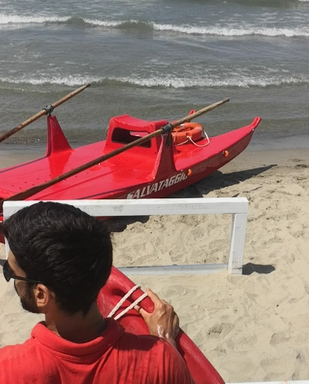

Chi Va Piano Va Sano & Va Lontano !
Ok la vita può essere una corsa, questo è assodato! Non vi mentirò e non vi dirò che ho ottenuto ciò che ho prendendomela
con comodo. Tuttavia, è meglio iniziare le cose lentamente e migliorare gradualmente, in modo da poter mantenere un ritmo costante e
non perdere la nostra cadenza di lavoro. Sicuramente, è meglio avere un flusso più lento e costante, piuttosto che correre e dover
lasciare il gioco a metà quando le cose diventano più interessanti. Alla fine tutti vogliamo tagliare il traguardo, è una questione
di costanza e di mantenere il proprio ritmo alla lunga.
Chi Fa Da Sé Fa Per Tre
Sì, se vuoi che qualcosa sia fatto e vuoi che venga fatto correttamente, perché qualcun'altro dovrebbe farlo al posto tuo? Nonostante in alcuni
casi cooperare e delegare sono parti fondamentali di una strategia vincente, credo che sia importante avere
almeno le capacità/conoscenze per fare le cose da solo, in modo da sapere cosa è previsto. Nei tempi meno facili mi sono ritrovato
a risolvere i problemi da me, sarebbe stato una perdita di tempo fare diversamente. Sapevo il da farsi, e ho fatto sì che le cose
andassero in porto per fortuna!
Non Tutto Il Male Vien Per Nuocere 
Non tutte le cose brutte portano frutti negativi! Anche le cose/eventi peggiori hanno un lato positivo, dipende dal modo in cui
guardiamo le cose, non il contrario. Il mondo - o per essere più precisi la sua percezione - può essere un riflesso
dei nostri pensieri e delle nostre emozioni. E naturalmente non sto dicendo che il mondo non possa essere un posto meschino e cattivo: la vita,
troppo spesso, non è affatto giusta. Ok. Ma siamo noi i creatori del nostro destino, possiamo accettare la vita e plasmare il nostro futuro!!
Aiutati Che D-I-O Ti Aiuta
In definitiva, è importante sapere su quali compiti e obiettivi di vita concentrarsi. Se non ci diamo la giusta direzione
chi lo farà?? possiamo avere ispirazione dall'esterno/dall'alto, ma spetta a noi prendere l'iniziativa!
La Vita È Bella.. 


Sì lo so.. Questo non è esattamente un modo di dire. Sembrerebbe di più il titolo di un film ! ma è solo un film?! o è una realtà concreta, tangibile?
Molte volte restiamo intrappolati in dilemmi e regole e ci dimentichiamo di V-I-V-E-R-E al massimo: concludo così.. lo so che parlare è la
cosa più facile.. ma quando sappiamo i concetti giusti non ci resta che vivere! La vita è bella !! Life is beautiful ...